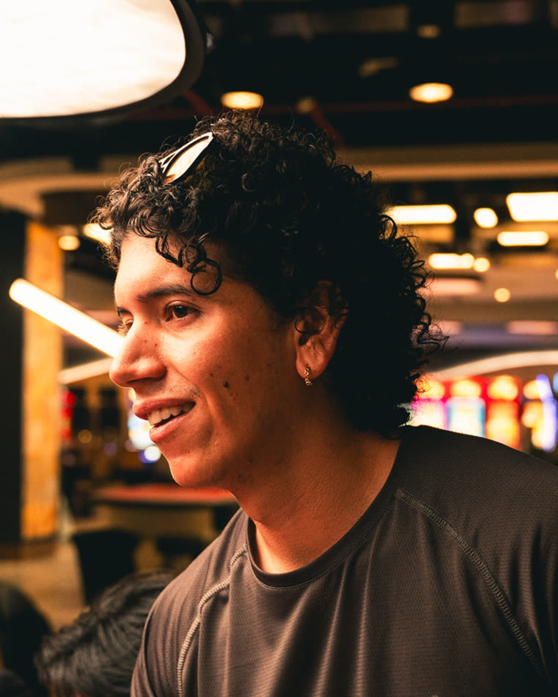

Casino Marco Polo
Dirección de campaña audiovisual para casino: visualizers y pieza promocional con pulso de cortometraje, entre brillo, juego y tensión.
Finalización / aprobación cliente / publicaciónHoja de vida audiovisual / 2026
Director y editor audiovisual. Construyo piezas desde atmósfera, ritmo, luz y presencia: imágenes que sostienen una experiencia antes de explicarla.

Estudiante de Cine y Comunicación Digital con enfoque en dirección, edición, montaje y desarrollo visual. Mi trabajo cruza ficción, documental y piezas promocionales desde una mirada cinematográfica: encuadre, tensión sutil y coherencia de tono.
Créditos seleccionados
Dirección de campaña audiovisual para casino: visualizers y pieza promocional con pulso de cortometraje, entre brillo, juego y tensión.
Finalización / aprobación cliente / publicaciónExploración de color y encuadre en una microficción documental: un gesto mínimo sostenido por luz, sombra y respiración.
PostproducciónPieza del marco creativo Siento, dirigida como búsqueda de presencia, color y encuadre antes de la palabra.
PostproducciónDirección documental para el Colegio ALAS de Jamundí: cuerpos en tránsito, fe, cansancio y movimiento colectivo.
Finalización / posible material complementario